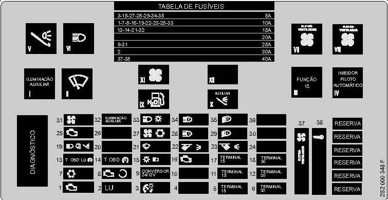
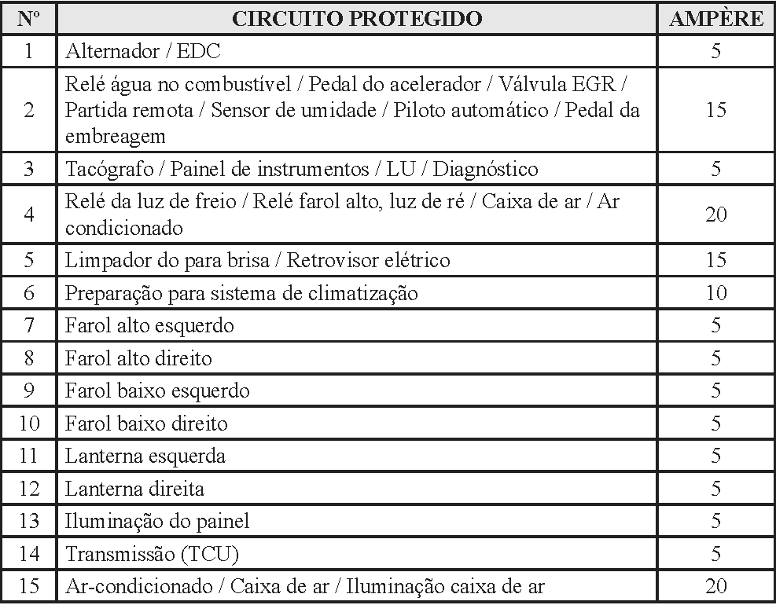
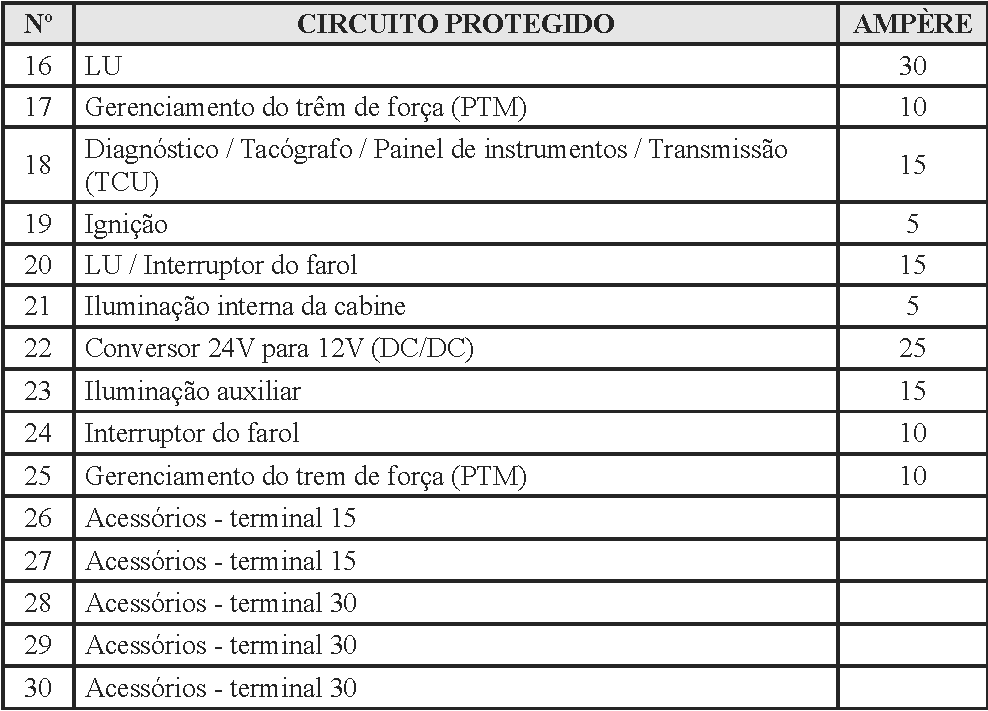
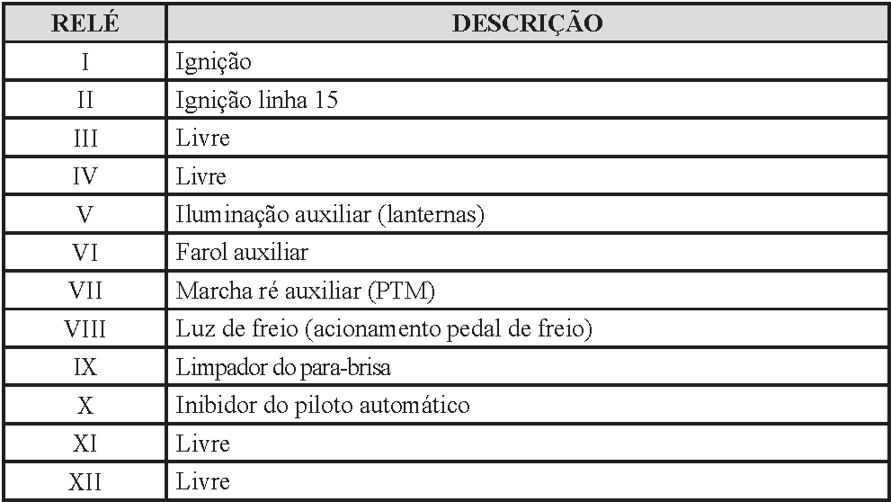

Avisos
 
| ATENÇÃO!
Antes
de realizar quaisquer trabalhos no sistema elétrico, é necessário
desconectar a bateria, iniciando primeiramente pelo cabo negativo (-). |

|
NOTA!
Ao
ligar novamente a bateria, verificar os equipamentos do veículo (rádio,
relógio, travas elétricas, vidros elétricos, etc.) de acordo com o
manual de reparação e/ou as instruções de utilização.
|




Proteção para ligações adicionais
Para
ligações adicionais, utilize os fusíveis F26 e F27 do terminal 15
(conexão que é ativada após o acionamento da chave de ignição) ou os
fusíveis F28, F29 e F30 do terminal 30 (ligação do positivo conectado
diretamente da bateria). Em quaisquer dessas ligações adicinais, a
capacidade máxima de carga para cada fusível é 30 ampéres.

|